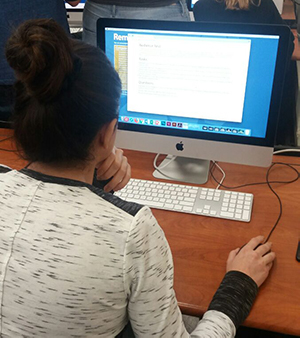
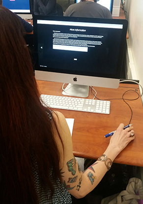

During class, we had a live audience come in to test our websites. From my testing, I found that users had a hard time navigating through my site using the triangle arrow buttons. They only clicked on the buttons because they were intrigued by them AFTER playing the game, since the start button on the title page was the most prominent element that stood out.
Persia the first user who tested my website. She was stuck on my target audience page for a few minutes before she found the link to my prototype page, because she did not read anything on my page. This made me realize that some users will not take the time to read through the directions and follow steps. I should have made it clear where my link was, and made it stand out more, although this has nothing to do with my site itself. I learned from Persia that the overall layout of my site was straighforward and easy to navigate though, aside from my buttons mentioned in the previous paragraph.
Glenda was the second user who tested my website. She pointed out the same thing Persia did about the arrows, and I addressed their problem by following their suggestion to label each arrow with the pages they take the user to. She also said that my design was straight forward and easy to navigate, though I could work more on making my paragraph widths narrower to make it easier for people to read my about and more info pages. I took this into account and decided to make paragraphs with set widths. Overall, I found the user testing session to be super helpful, because I got to see where my users would struggle in figuring out how to navigate through my site and play with my game.